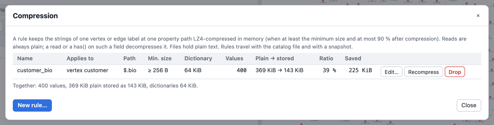

Compressed Properties
Large text values that queries rarely read (a CV, a product description, a document body) can take most of a graph's memory. A compression rule names where such values live (an element kind, a label and a property path) and the graph keeps the strings there LZ4-compressed in memory. A traversal that reads one gets the plain string, decompressed on the fly; the graph never holds a decompressed copy. Nothing else changes: queries, results, change sets, exports and files see plain strings only.
// Strings of `customer` vertices at `details.career.cv` (and their `bio`) are kept compressed.
g.define_compression(#{name: "customer_cv", label: "customer", path: "details.career.cv"});
g.define_compression(#{name: "customer_bio", label: "customer", path: "bio", min_bytes: 512});
// An edge rule.
g.define_compression(#{name: "order_notes", element: "edge", label: "bought", path: "notes"});
g.v().has_label("customer").values(jpath("details.career.cv")).limit(1) // plain text
g.compressions() // the rules and their stats
g.memory_usage() // compressed_values, ...
Long values that repeat across many elements (file paths, URLs, addresses, category or status
texts) are a different case: a rule with codec: "dedup"
stores each distinct value once and lets every element point to
it.
Not sure a rule pays off, or which min_bytes to take? Estimate it first:
g.estimate_compression(#{label: "customer", path: "bio"}) measures the candidate rules on the
current data without changing anything.
When it pays off
- Long strings (hundreds of bytes and more) that are written once and read seldom: CVs, descriptions, notes, logs, document bodies. Typical text compresses to 40 to 55 % of its size (measured below); highly repetitive text much further.
- Not for short strings (names, codes): a value is compressed only when it is at least
min_byteslong (default 256) and its compressed form is at most 90 % of the plain size; everything else stays plain.
The cost model
- A read decompresses.
values(),value_map(),element_map(),project().by(),order().by(), a jpath read, a result: each decompresses the value it reads (about 1.5 to 3 GB/s, below). A read that never touches the field costs nothing. - A filter on such a field decompresses every candidate.
has("bio", TextP.containing("Rust"))reads the text of every vertex it tests. Filter on other properties first. A property index on the field serves equality and ranges without reading the candidates, but it holds the plain text (the memory compression saved). - A write compresses a string at a rule path (with the rule's dictionary). Only the touched top-level property is looked at; with no rule for the element's labels a write costs one lookup.
- The disk stays plain. Snapshots, the write-ahead log, GraphSON and GraphML hold the plain text: the persistence layer compresses whole chunks and large WAL records already, compressing single values twice would only cost CPU. A load compresses the rule paths again in one pass.
Rules
A rule is a definition of kind compression in the graph's catalog, next to the saved queries. It
has:
| Field | Meaning | Default |
|---|---|---|
name | an identifier, unique among the rules | required |
element | "vertex" or "edge" | "vertex" |
label | the label the rule applies to (it need not exist yet) | required |
path | a property name or a jpath of names: "cv", "details.career.cv", jpath("$['a b'].c"); no index ([0], [-1]): arrays are not compressed in this version | required |
codec | "lz4" (compress each value) or "dedup" (store each distinct value once) | "lz4" |
min_bytes | strings shorter than this (UTF-8 bytes) stay plain; 1 to 16 MiB | 256 (lz4), 25 (dedup) |
dictionary | build a dictionary from the rule's values (lz4 only; true with dedup is refused) | true (lz4), false (dedup) |
- Any number of rules: several paths on one label, the same path on different labels, vertex
and edge labels. One rule per element kind, label and path: a second one is refused
(
DefinitionError::Conflict, its help namesdrop_compression). - Several labels of one vertex: every label's rules apply; when two labels have a rule for the same path, the first label in label order wins (the same rule as schema coercion).
- A label change (
add_vertex_label/remove_vertex_label,set_edge_label) compresses what a new label's rules cover and decompresses what no rule covers any more. - Only strings are compressed. A number, an object or an array at a rule path stays as it is.
The explicit pass
Defining a rule, redefining it with other parameters, dropping it and loading the catalog run the
pass over the rule's label in the same commit: every value at the old and the new path is
re-encoded (compressed when it qualifies, decompressed when it no longer does). g.recompress(name)
runs it again on demand and rebuilds the dictionary, for example after much data was added to a
rule that was defined on an empty label. The pass changes no data: a commit hook sees only the
SetDefinition of the rule, and a recompress alone commits nothing.
Dictionaries
With dictionary: true the pass builds a dictionary from a sample of the rule's current values (in
id order, up to 1 KiB of each value, up to 64 KiB, the LZ4 window) and compresses with it, which
helps short and similar texts most. A dictionary is in memory only: a load builds it again. A value
written before a dictionary exists (a rule on an empty label) is compressed without one until the
next recompress or load. Every compressed value carries its dictionary, so it stays readable when
the rule changes.
Deduplicating repeated values
A rule with codec: "dedup" keeps one copy of every distinct value at its path in a table of
the rule, and every element whose value is that text keeps only a reference to it. Reads stay plain
and cost nothing extra (the text is read in place, nothing is decompressed); query results, change
sets, exports and files never change, and the files keep their format (plain values; a load shares
them again).
// Every `symbol` vertex's `path` (a few hundred distinct file paths over 100,000 symbols).
g.define_compression(#{name: "symbol_path", label: "symbol", path: "path", codec: "dedup"});
g.compressions()[0] // compressed_values (the shared values), distinct_values, ...
When it pays: long values repeated across many elements, such as file paths, URLs, addresses,
category, status or type texts. Measured on a code knowledge graph: the path of its symbols took
1.17 MB of heap for 816 distinct values, about 40 KB deduplicated.
When it does not:
- Short values. A string of at most 24 bytes (on 64-bit targets) is stored inline in the
property slot and owns no heap: there is nothing to share, so a dedup rule never shares it,
whatever its
min_bytes(repo,kind,origin, short codes and names). The defaultmin_bytesof a dedup rule is therefore 25. - Mostly distinct values. Every distinct value costs its bytes plus 32 bytes (the reference
counts of its shared copy and its slot in the table), so a path whose values rarely repeat (ids,
descriptions, CVs) costs more than it saves. The estimate warns with
high_cardinality; for long unique text uselz4.
The rule's numbers: compressed_values counts the shared values (one per element), distinct_values
the distinct texts among them, plain_bytes their plain size and stored_bytes each distinct text
once plus 32 bytes for it; a reference itself costs nothing beyond the property slot a plain string
occupies too. saved_bytes of an estimate is plain_bytes - stored_bytes.
A text no element references any more (it was overwritten, its element dropped) leaves the table
lazily: when the table has doubled since its last sweep, after a rolled-back transaction, on
g.recompress(name) and on a load, so a table holds at most about twice its live values.
g.memory_usage() reports deduped_values, deduped_plain_bytes and dedup_table_bytes (every
shared text once, part of property_bytes).
lz4 and dedup are one rule per element kind, label and path: redefining the rule with the other
codec re-encodes its values in the same commit.
Warning (0.2.0): Graphersal 0.2.0 does not know the codec
dedupand reads a store that holds adeduprule as damaged from the commit that defined it on (maintenance mode; its repair would drop those commits). Do not open such a store with 0.2.0, and never rungraphersal store repairfrom 0.2.0 on it; use 0.2.1 or later.
A rule from a newer version
A store (or a catalog file, a change set) written by a newer Graphersal may hold a rule whose
codec or element this version does not know, or whose path it cannot parse. Since 0.2.1 such
a rule is never damage: it is kept in the catalog exactly as read and written back unchanged
(its payload byte for byte through the journal, checkpoints, backups, forks and snapshots), but it
is not applied: its values stay plain in memory, as they are on disk anyway. g.compressions()
(and the playground, the dev server and MCP's list_compressions, Python's compressions()) shows
it with the codec, element and path as read, served: false and a reason such as codec 'zstd'
is not known to this version; g.recompress(name) refuses it with that reason. It can be dropped
like any rule. A rule of a known codec on the same element kind, label and path conflicts with it
(so the newer version never finds two rules on one path). Creating a rule of an unknown codec is
refused by every front end (they take only the known codec names).
Estimating the gain
Before defining a rule, an estimate measures what rules for one element kind, label and path would hold over the current values, without changing the graph (no commit, no catalog change, no value re-encoded; it only reads):
g.estimate_compression(#{label: "person", path: "name"}) // short names: nothing qualifies
let e = g.estimate_compression(#{label: "customer", path: "bio"});
e.candidates[e.best] // the candidate that saves the most
// Only some candidates: each key given narrows the set.
g.estimate_compression(#{label: "customer", path: "details.career.cv", min_bytes: 512});
g.estimate_compression(#{element: "edge", label: "bought", path: "notes", dictionary: false});
// Deduplication, alone or side by side with lz4.
g.estimate_compression(#{label: "symbol", path: "path", codec: "dedup"});
g.estimate_compression(#{label: "symbol", path: "path", codec: ["lz4", "dedup"]});
Without codec, min_bytes and dictionary the candidates are lz4 without and with a
dictionary at min_bytes 64, 128, 256, 512 and 1024, plus the parameters of the rule that covers
the path today (if any, a dedup rule too). codec: "dedup" measures dedup at min_bytes 25, 64,
128 and 256; a list of codecs measures each codec's candidates. The answer:
| Key | Meaning |
|---|---|
elements, values_found, string_values, string_bytes | the elements carrying the label, how many have a value at the path, how many of those are strings, and their size |
histogram | the strings by size (min_bytes, max_bytes, values, bytes; buckets from 64 B to 16 KiB), to choose min_bytes |
candidates | per candidate: codec, min_bytes, dictionary, compressed_values (the strings it would compress or share), plain_bytes, stored_bytes, dictionary_bytes, distinct_values (dedup: the distinct texts among them), saved_bytes (= plain - stored - dictionary; negative: the rule costs memory), ratio, current (the parameters of today's rule), encode_bytes_per_sec and decode_bytes_per_sec (the speed measured on this data: a read of a compressed value pays the decode; () for dedup, whose reads cost nothing extra) |
best | the index of the candidate that saves the most, () when none saves anything |
current | today's rule on that path (name, parameters and what it holds now), the baseline |
warnings | unknown_label (no element has the label: a typo?), no_values (nothing at the path), not_strings (values a rule never compresses), nothing_qualifies, no_saving, high_cardinality (dedup would share values but saves nothing: they are mostly distinct) |
sampled, measured_values | whether the candidates were measured on a sample (below) |
The estimate is the rule. The trial dictionary is built by the same code as a defined rule's
(the values in id order, up to 1 KiB of each, up to 64 KiB) and a value counts exactly when the
rule's write path would compress it, so the numbers of a candidate are what g.compressions()
reports after defining that rule on the same data. The byte counts are those of the rule's stats:
the plain and the compressed size of the values and the dictionary, not the per-value bookkeeping.
Bounded. The estimate compresses at most 100,000 strings and 16 MiB of plain text per
dictionary setting. Above either cap it compresses a deterministic sample (every k-th string in id
order), says sampled: true, and extrapolates each candidate from the exact count and size of the
strings that reach its threshold; the counts and the histogram stay exact, and so do the dedup
candidates (they need no trial compression: every string is counted). A running estimate stops
when the host cancels (the dev server's Stop, a CancelToken).
It reads the data of that label, so it asks for Read on Data of that element kind and label,
never for a catalog write: AccessPolicy::read_only(), the MCP read-only mode and a saved query may
estimate. A storage without compressed properties answers Unsupported.
In the playground, the rule form of Catalog ▾ ▸ Compression has a Codec choice (lz4 or
dedup; the dictionary is lz4 only) and an Estimate button once the label and the path are
filled: a table of the lz4 and dedup candidates (with the distinct values of each dedup candidate)
with a saving bar each, the best one highlighted, the note "the graph was not changed", and Use
copying a candidate's codec, minimum size and dictionary into the form.
API
| Define | List | Drop | Recompress | Estimate | |
|---|---|---|---|---|---|
| Rhai (both spellings) | g.define_compression(#{..}) | g.compressions() | g.drop_compression(name) | g.recompress(name) | g.estimate_compression(#{label, path, element?, codec?, min_bytes?, dictionary?}) |
Rust (GraphTraversalSource) | define_compression(name, CompressionDefinition), set_definition(Definition::compression(..)) | list_definitions(Some(DefinitionKind::COMPRESSION)), compression_stats(name) | remove_definition(DefinitionKind::COMPRESSION, name) | recompress(name) | estimate_compression(&CompressionEstimateRequest) |
Python (Graph) | define_compression(name, label, path, element="vertex", min_bytes=None, dictionary=None, codec=None) | compressions() | drop_compression(name) | recompress(name) | estimate_compression(label, path, element="vertex", min_bytes=None, dictionary=None, codec=None) |
| Playground | Catalog ▾ ▸ Compression: the rules with their stats, a form with field errors and Estimate | ||||
| Dev server | POST /api/compression/define | GET /api/compression | POST /api/compression/drop | POST /api/compression/recompress | POST /api/compression/estimate |
| MCP | define_compression | list_compressions | drop_compression | recompress | estimate_compression (also read-only) |
g.compressions() lists each rule with compressed_values, plain_bytes, stored_bytes,
dictionary_bytes and distinct_values (dedup). g.memory_usage() (and MemoryStats) adds
compressed_values, compressed_plain_bytes, compressed_stored_bytes and
compression_dictionary_bytes (lz4), and deduped_values, deduped_plain_bytes and
dedup_table_bytes (dedup); property_bytes counts the compressed (stored) size and every shared
text once.
use graphersal::prelude::*;
use graphersal::{catalog::CompressionDefinition, storage::ElementKind};
let mut graph = TraversalGraph::new();
let rule = CompressionDefinition::new(ElementKind::Vertex, "customer", "details.career.cv")
.unwrap()
.with_min_bytes(512)
.with_dictionary(false);
graph.traversal_mut().define_compression("customer_cv", rule).unwrap();The estimate in Rust (graphersal::catalog: CompressionEstimateRequest, CompressionCandidate,
CompressionEstimate); a storage implements it as GraphStorage::estimate_compression:
use graphersal::prelude::*;
use graphersal::catalog::{CompressionCandidate, CompressionDefinition, CompressionEstimateRequest};
use graphersal::storage::ElementKind;
let mut graph = TraversalGraph::new();
let request = CompressionEstimateRequest::new(ElementKind::Vertex, "customer", "bio")
.unwrap()
.with_candidates([CompressionCandidate::lz4(256, true), CompressionCandidate::lz4(512, false)]);
let estimate = graph.traversal().estimate_compression(&request).unwrap();
if let Some(best) = estimate.best {
let rule = CompressionDefinition::new(ElementKind::Vertex, "customer", "bio").unwrap();
let rule = estimate.candidates[best].candidate.apply_to(rule);
graph.traversal_mut().define_compression("customer_bio", rule).unwrap();
}Authorization: a rule is the resource Definition { kind: compression, name }: define asks
Create (Update when it replaces one), drop Delete, recompress Update, listing Read. No data
request is made (the logical data does not change). AccessPolicy::read_only(), the MCP read-only
mode and a saved query (which never writes the catalog) cannot change rules. An estimate asks
Read on the Data of its element kind and label.
The catalog file: rules travel with the saved queries in one catalog file
({"definitions": [..]}, the playground's Catalog ▾ ▸ Save catalog, the dev server's
GET /api/catalog/export); loading it stores the rules and compresses their values at once. A
snapshot and a Store carry the catalog, so a rule survives every store operation (WAL replay,
checkpoint, fork, backup, restore, repair, rollback); the files hold plain values, and the load
compresses again. A version that does not know the kind keeps the rule unchanged and only loses the
compression (the definition is not critical). A version that knows the kind but not the codec
(0.2.0 reading a dedup rule written by 0.2.1) cannot decode the rule's payload and reports the
definition as damage; drop dedup rules before opening a store with an older version.
In the playground, Catalog ▾ ▸ Compression lists the rules with their statistics (here 400 customer biographies, about 1 KiB each) and defines, edits, recompresses and drops them:

Measured
On a generated CV-like corpus of 5,000 texts of 2 to 20 KB (55 MB: section headers, sentences
from a 200-word vocabulary, company names, years and numbers), Apple M-series, --release
(compressed_property_tests::measure_ratio_and_throughput, an #[ignore]d test):
| Stored / plain | Dictionary | Define pass (compress) | Read (decompress + materialize) | |
|---|---|---|---|---|
| LZ4 | 0.52 | none | 451 MB/s | 2,741 MB/s |
| LZ4 with dictionary | 0.42 | 64 KiB | 328 MB/s | 1,626 MB/s |
The compression figures include a round-trip check of every value (a compressed value is verified once when it is made, so reading it back cannot fail). A highly repetitive corpus (a dozen phrases recombined) compresses to 0.07 (0.05 with a dictionary). The figures come from a source build, not from the musl-linked prebuilt Linux binary (Performance of the prebuilt Linux binaries).